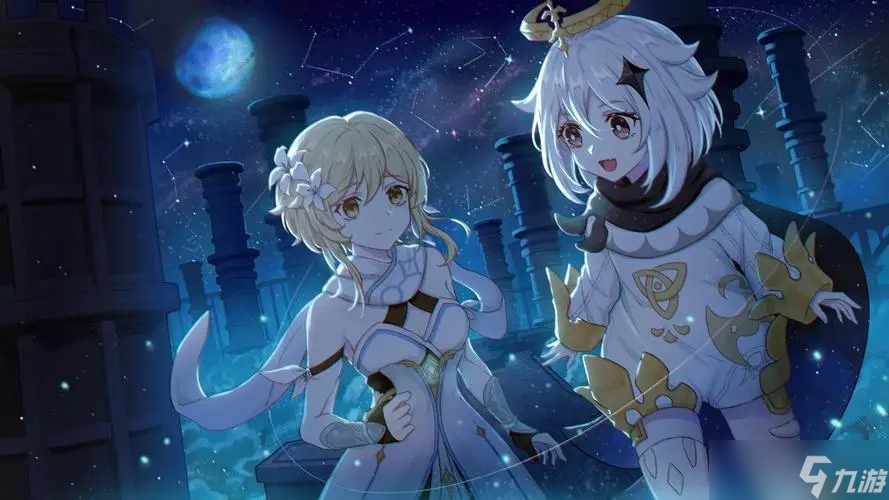

關於我們
我們是提瓦特的旅行者和派蒙，一對在塵世七國間探索的冒險搭檔。這裡記錄了我們在蒙德、璃月、稻妻以及更多神秘土地上的奇遇——從風神的調皮玩笑到岩神的滑稽挑戰，再到深海與火山的驚險旅程。每一次冒險，都是一段關於勇氣、智慧與歡笑的故事。我們希望通過這些文字，將提瓦特世界的美好與不可思議分享給每一位旅人。不管你是尋找寶藏的冒險者，還是單純喜歡聽故事的朋友，歡迎加入我們的旅途，一起感受風的自由、海的深邃，以及每一場挑戰背後的溫暖。啟程吧，旅行者，下一段奇遇正在等待！
我們是提瓦特的旅行者和派蒙，一對在塵世七國間探索的冒險搭檔。這裡記錄了我們在蒙德、璃月、稻妻以及更多神秘土地上的奇遇——從風神的調皮玩笑到岩神的滑稽挑戰，再到深海與火山的驚險旅程。每一次冒險，都是一段關於勇氣、智慧與歡笑的故事。我們希望通過這些文字，將提瓦特世界的美好與不可思議分享給每一位旅人。不管你是尋找寶藏的冒險者，還是單純喜歡聽故事的朋友，歡迎加入我們的旅途，一起感受風的自由、海的深邃，以及每一場挑戰背後的溫暖。啟程吧，旅行者，下一段奇遇正在等待！